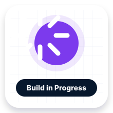
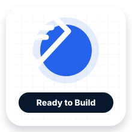
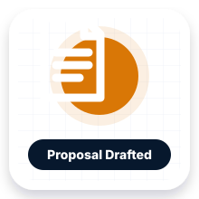
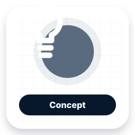
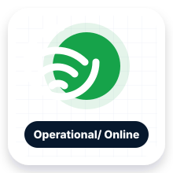
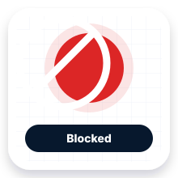
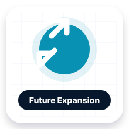

Build in Progress
Mission Control Access Switches
Commission R1-SW01 through R1-SW03, validate classroom workstation paths, and document access switch baselines.
Next action: Wipe and recommission R1-SW01, then finish validation notes.
Project Status Board
This restores the broader project board from the v0.7 portal while preserving the approved status icon media set.

Commission R1-SW01 through R1-SW03, validate classroom workstation paths, and document access switch baselines.
Next action: Wipe and recommission R1-SW01, then finish validation notes.
Prepare R2-PVE01, R2-PVE02, and R2-PVE03 as the virtualization foundation for teaching services.
Next action: Validate RAM, storage, iDRAC access, and first service deployment.

Use Dell PowerEdge R930 class hardware for ISO storage, VM templates, restore staging, and Proxmox backups.
Next action: Inventory drives, select TrueNAS or Linux storage model, then connect to Proxmox.
Operate the HP c3000 and BL460c Gen9 blade environment as the cyber range compute platform.
Next action: Resolve management access and create initial VM templates.

Integrate the second R930 as cyber range storage while documenting power, cooling, and controlled startup policies.
Next action: Complete power draw review and rack placement decision.
Rack one Fortinet firewall, one Palo Alto firewall, and one Cisco 2900 Series router as a non-production security-edge staging bay.
Next action: Rack equipment, cable management, label, photograph, and document.
Deploy GLPI as the student-facing help desk and simulated support workflow platform.
Next action: Build R2-HDSK01 and define first ticket categories.
Display service status, cyber range activity, project board, ACE tickets, rack health, maps, and student missions.
Next action: Define R1-DISP01 kiosk workflow and dashboard rotation.

Provide an interactive student and visitor assistant for SOTE questions, missions, documentation lookup, and next steps.
Next action: Create approved FAQ and safe response boundaries.
Create collectible digital and printable badges tied to hands-on mission completion.
Next action: Connect badge criteria to mission queue and student roles.
Organize spare parts, rails, cables, adapters, transceivers, and repair inventory into a student-managed locker system.
Next action: Create inventory bins, labels, and intake checklist.
Status Icon Legend


